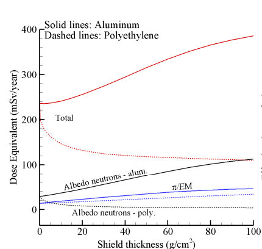
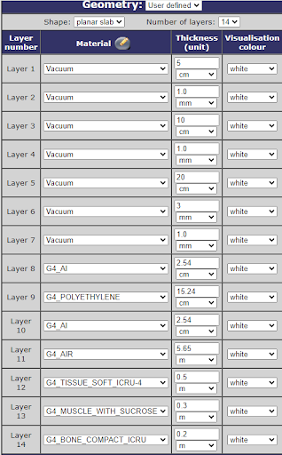

A theoretical study using SPENVIS and MULASSIS to model astronaut radiation exposure during a six-month Mars surface mission. The analysis supports safe habitat design with graded shielding using polyethylene, water, and aluminum.
6 months (182.5 days)
This analysis accounts only for radiation exposure during the crew's stay inside the habitat on Martian soil and does not include transit-related exposure to or from Mars.
To protect astronauts from space radiation, shielding was graded based on expected occupancy and exposure risk:

Materials were selected based on their effectiveness against Galactic Cosmic Rays (GCRs) and Solar Particle Events (SPEs):
A theoretical shielding analysis using SPENVIS and its MULASSIS tool was performed to simulate Total Ionizing Dose (TID) over the mission duration.
Assumptions:

| Radiation Source | Particle Type | Total Ionizing Dose (TID) |
|---|---|---|
| Galactic Cosmic Rays | Z = 1 (protons) | 0.053 Gy |
| Galactic Cosmic Rays | Z = 2 (helium) | 0.014 Gy |
| Solar Particle Events | – | 0.24 mSv |
| Total TID | – | 67.24 mSv |
NASA's career dose limits (based on cancer risk) is about 0.6 to 1.0 Sv for astronauts. These results indicate our proposed shielding strategy keeps astronaut radiation exposure within acceptable mission thresholds.
{kind=link}
{kind=link}